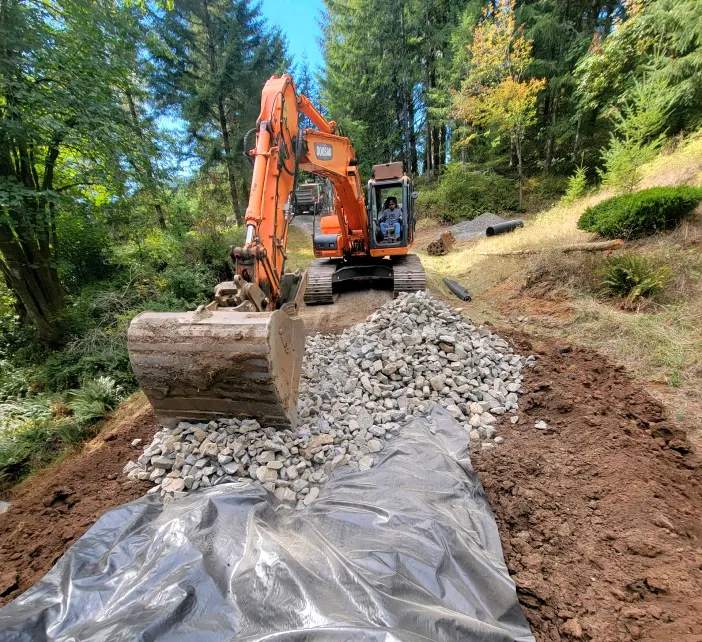

Professional Trenching and Excavation in Vancouver, WA

Trusted Trenching and Excavation in Vancouver, WA
Professional trenching and excavation are foundational to successful construction, whether for a new home, commercial development, or infrastructure upgrade. In Vancouver, Washington, property owners and builders rely on experienced local contractors who understand the soil conditions, weather patterns, and permitting expectations unique to Clark County. Brynion Excavation is a locally operated excavation and site preparation contractor that brings this regional understanding to every project, helping ensure work is completed accurately, safely, and on schedule.
Excavation is more than moving dirt. It requires careful planning, proper equipment, and an experienced team that can interpret site plans and adapt to real-world conditions. From residential property owners preparing land for a new structure to commercial developers needing precise utility trenching, Brynion Excavation provides dependable excavation services designed to support strong, long-lasting construction outcomes. Their approach emphasizes clear communication, hands-on project management, and workmanship that meets both engineering requirements and local expectations.
Serving Vancouver, Washington and surrounding communities in Clark County and Southwest Washington, Brynion Excavation has built a reputation for reliable trenching and excavation services that prioritize safety and efficiency. Their team works closely with homeowners, contractors, and developers to prepare sites correctly from the ground up, reducing delays and preventing costly corrections later in the project.
Key benefits of working with a trusted local excavation contractor include:
- Familiarity with Vancouver, WA soil conditions and terrain
- Knowledge of local codes and construction standards
- Responsive communication and accessible project management
- A focus on safe, organized job sites
- Consistent timelines supported by in-house equipment
By choosing a contractor rooted in the community, clients gain a partner who understands both the technical and regional aspects of professional excavation.
Residential and Commercial Site Preparation Services
Site preparation is a critical phase for both residential and commercial construction projects. Before any foundation, slab, or structure can be built, the land must be properly cleared, graded, and prepared to support the intended use. Brynion Excavation provides comprehensive site preparation services in Vancouver, Washington, ensuring properties are ready for construction with minimal disruption and maximum accuracy.
Residential site preparation often involves working in tight spaces, around existing structures, or on properties with varying elevations. Brynion Excavation approaches residential projects with attention to detail, protecting surrounding areas while preparing sites for homes, additions, garages, pole barns, and other structures. Their team understands that homeowners value clear explanations, realistic timelines, and a clean, safe work environment.
Commercial site preparation requires a different scale of planning and coordination. From small commercial builds to larger developments, Brynion Excavation supports contractors and developers by delivering precise grading, excavation, and clearing services that align with construction plans and schedules. Their hands-on approach helps ensure each phase of site preparation flows smoothly into the next.
Common residential and commercial site preparation services include:
- Lot clearing and vegetation removal
- Rough and finish grading for proper elevation
- Excavation for foundations and slabs
- Site prep for pole barns and accessory structures
- Preparation for concrete flatwork and paving
With experience across a wide range of project types, Brynion Excavation helps ensure that both residential and commercial sites in Vancouver, WA are prepared correctly from the start.
Precision Grading, Utility Trenching, and Clearing
Accurate grading and trenching are essential for the long-term performance of any construction project. Improper slopes, uneven surfaces, or poorly planned utility trenches can lead to drainage problems, structural issues, and costly repairs. Brynion Excavation provides precision grading and utility trenching services designed to meet project specifications while accounting for real-world site conditions in Southwest Washington.
Grading involves shaping the land to achieve proper drainage, stability, and usability. Brynion Excavation uses modern equipment and experienced operators to establish accurate elevations and slopes, supporting everything from building pads to driveways and paved areas. Their grading work is performed with an understanding of how water moves across and through the soil, which is especially important in the Vancouver, Washington climate.
Utility trenching requires careful planning and execution to protect existing infrastructure and ensure proper placement of new lines. Brynion Excavation performs utility trenching for water, sewer, drainage, and other underground systems as part of their site preparation services. Their team focuses on precision, safety, and coordination with other trades to keep projects moving forward.
Precision grading, trenching, and clearing services typically include:
- Rough and finish grading for residential and commercial sites
- Utility trenching for water, sewer, and drainage systems
- Land clearing to remove trees, brush, and debris
- Preparation for concrete and paving installation
- Erosion control considerations during earthwork
By combining careful planning with skilled execution, Brynion Excavation helps clients avoid common excavation issues and achieve reliable, long-lasting results.
Safe, Efficient Excavation with In-House Equipment
Safety and efficiency are essential on any excavation project. Working with heavy equipment and changing site conditions requires experienced operators, clear procedures, and a commitment to job site safety. Brynion Excavation prioritizes safe excavation practices while maintaining efficient workflows that keep projects on schedule.
One of the key strengths of Brynion Excavation is their use of in-house equipment. Owning and maintaining their own machinery allows the company to control scheduling, reduce delays, and respond quickly to changing project needs. This approach supports consistent quality and helps prevent the downtime that can occur when equipment availability is uncertain.
Efficiency also comes from hands-on project management. Brynion Excavation remains actively involved in each job, coordinating tasks, monitoring progress, and addressing challenges as they arise. This level of oversight is especially valuable on complex sites or projects with tight timelines, common in both residential and commercial construction throughout Vancouver, Washington.
Advantages of safe, efficient excavation with in-house equipment include:
- Improved control over project timelines
- Reduced reliance on third-party equipment rentals
- Consistent equipment maintenance and reliability
- Enhanced job site safety and organization
- Faster response to unexpected site conditions
By combining safety-focused practices with efficient operations, Brynion Excavation delivers excavation services that property owners and builders can trust.
Drainage Solutions and Strong Construction Foundations
Proper drainage is one of the most important factors in protecting a construction project over time. Without effective drainage, water can accumulate around foundations, weaken soil, and contribute to structural damage. Brynion Excavation provides drainage solutions as part of their excavation and site preparation services, helping manage water flow and protect long-term investments.
In Vancouver, Washington and surrounding Clark County areas, rainfall and groundwater conditions make drainage planning especially important. Brynion Excavation evaluates each site to identify potential water management concerns and designs excavation and grading solutions that direct water away from structures and critical areas. This proactive approach helps reduce the risk of erosion, pooling, and foundation issues.
Strong foundations begin with accurate excavation and proper base preparation. Brynion Excavation ensures that foundation areas are excavated to the correct depth and dimensions, with stable soil conditions that support concrete placement. Their work supports a wide range of construction projects, including homes, commercial buildings, and accessory structures.
Drainage and foundation preparation services may include:
- Excavation for foundation footings and slabs
- Grading to promote positive water drainage
- Trenching for drainage systems and utilities
- Soil preparation for concrete flatwork
- Site adjustments to reduce erosion risks
By addressing drainage and foundation needs during the excavation phase, Brynion Excavation helps clients in Southwest Washington build with confidence and durability.
Local Expertise Delivering Reliable Project Timelines
Local expertise plays a major role in the success of excavation and site preparation projects. Contractors who understand the regional environment can anticipate challenges and adapt their approach accordingly. Brynion Excavation brings local knowledge of Vancouver, Washington and surrounding communities to every project, supporting reliable timelines and predictable outcomes.
Working in Clark County involves navigating varying soil types, weather patterns, and site access considerations. Brynion Excavation uses this regional insight to plan excavation schedules, select appropriate equipment, and coordinate efficiently with other trades. Their familiarity with local conditions helps minimize surprises and keep projects moving forward.
Reliable timelines are also the result of strong communication. Brynion Excavation emphasizes clear, consistent communication with clients, builders, and developers. From the initial consultation through project completion, their team keeps stakeholders informed and engaged, supporting smoother workflows and fewer delays.
Benefits of choosing a locally experienced excavation contractor include:
- Better planning based on regional soil and weather conditions
- Faster response times for Vancouver, WA area projects
- Strong relationships with local builders and property owners
- Clear communication throughout the project lifecycle
- Dependable scheduling supported by in-house resources
Brynion Excavation’s commitment to local service, precision work, and dependable timelines makes them a trusted partner for excavation and site preparation throughout Southwest Washington.
Frequently Asked Questions
How do I know if I need professional excavation services for my property in Vancouver, Washington?
Professional excavation services are recommended when preparing land for construction, installing utilities, improving drainage, or addressing grading issues. Brynion Excavation serving Vancouver, Washington provides evaluations that help determine the scope of work needed based on soil conditions, site layout, and project goals. Hiring an experienced excavation contractor helps ensure safety, accuracy, and compliance with local construction expectations.
What types of projects does Brynion Excavation handle?
Brynion Excavation handles residential and commercial excavation and site preparation projects throughout Vancouver, Washington and surrounding Clark County areas. Their services include excavation, grading, land clearing, utility trenching, drainage solutions, and preparation for concrete flatwork, paving, and structure foundations. They focus exclusively on earthwork and site prep services that support strong construction outcomes.
Why is proper grading important for construction projects?
Proper grading ensures that water drains away from structures and that surfaces are stable and level for construction. In the Vancouver, Washington area, improper grading can lead to water pooling, erosion, and foundation problems over time. Brynion Excavation uses precision grading techniques to establish correct elevations and slopes that protect both residential and commercial properties.
How does in-house equipment benefit an excavation project?
In-house equipment allows Brynion Excavation to maintain better control over scheduling, quality, and safety. Serving Vancouver, Washington and nearby communities, they can respond quickly to changing site conditions without waiting on rental availability. This approach helps keep projects on track and supports consistent, reliable excavation work.
What should I expect during a utility trenching project?
Utility trenching involves careful excavation to install or replace underground lines such as water, sewer, or drainage systems. Brynion Excavation serving Vancouver, Washington plans each trenching project with safety and accuracy in mind, coordinating with other trades as needed. Clients can expect clear communication, precise excavation, and attention to protecting surrounding areas.
Can excavation help solve drainage problems on my property?
Yes, excavation and grading are often key components of effective drainage solutions. Brynion Excavation evaluates water flow, soil conditions, and site layout to design drainage-focused excavation strategies for properties in Vancouver, Washington. Addressing drainage during site preparation can prevent long-term issues and protect structures from water damage.
How long does a typical excavation or site preparation project take?
Project timelines vary depending on size, complexity, and site conditions. Brynion Excavation serving Vancouver, Washington provides realistic schedules based on hands-on planning and local experience. Their use of in-house equipment and active project management helps ensure work is completed efficiently without compromising quality.
How do I choose the right excavation contractor in Clark County?
Choosing the right excavation contractor involves looking for local experience, clear communication, proper equipment, and a focus on safety. Brynion Excavation offers excavation and site preparation services throughout Vancouver, Washington and Clark County with an emphasis on dependable timelines and quality workmanship. Working with a local contractor helps ensure your project is prepared correctly from the start.